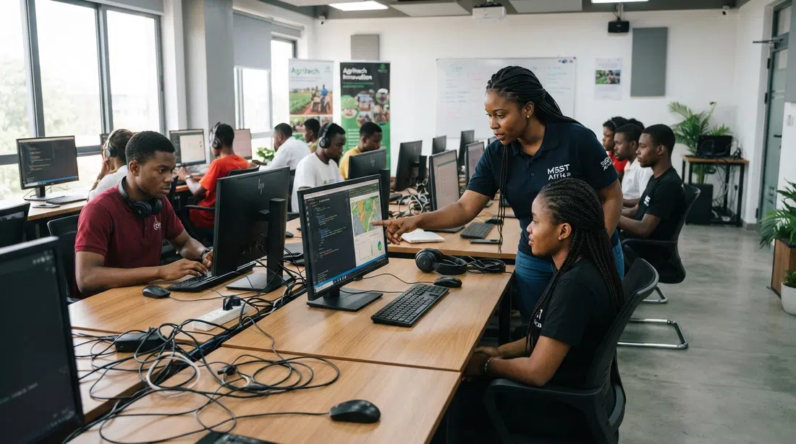
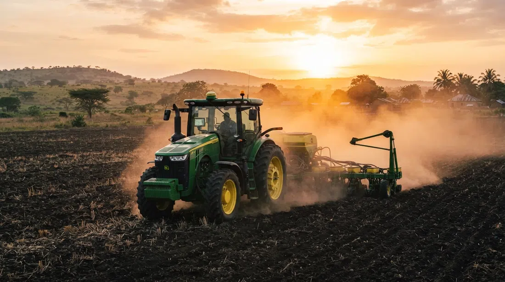

01Formation, emploi et talents numériques
Formation, certification et renforcement des capacités autour du numérique agricole.

AGROPULSE GLOBAL SOLUTIONS
Conseil et services numériques pour accompagner la transformation digitale et verte de l’agriculture.
Visuel illustratif issu de la maquette AgroPulse.
AGIR AVEC LES FILIÈRES
AgroPulse Global Solutions accompagne les filières agricoles avec du conseil, des systèmes d’information, l’analyse de données et des solutions numériques.
Pays d’intervention indiqués : Côte d’Ivoire, Sénégal et Guinée-Bissau.
NOS DOMAINES D’EXPERTISE
Les six pôles du cahier des charges v0.5, illustrés par les visuels de la nouvelle maquette.

01Formation, certification et renforcement des capacités autour du numérique agricole.
02Diagnostic, cartographie, applications, portails et gouvernance des données agricoles.
 03
03Analyse des données, aide à la décision, tableaux de bord et prévisions agricoles.
 04
04Mesure et suivi des enjeux climatiques, carbone, ESG, traçabilité et adaptation.
 05
05Accompagnement de projets agri-tech : modèles d’affaires, incubation et mentorat.

06Diagnostics, faisabilité, études de marché, conseil en digitalisation et mécanisation.
PROGRAMMES
La source fonctionnelle décrit une formation de 2 à 3 mois. La durée totale, le calendrier et les critères restent à confirmer.
Candidatures fermées

Les informations sur la session du 26 septembre 2026 et sur toute nouvelle édition doivent être confirmées avant publication.
Informations à confirmer
ÉCHANGEONS
AgroPulse accompagne les projets de transformation des filières agricoles.
Les coordonnées officielles et le destinataire des demandes restent à confirmer. Aucun formulaire n’est activé dans cet aperçu.